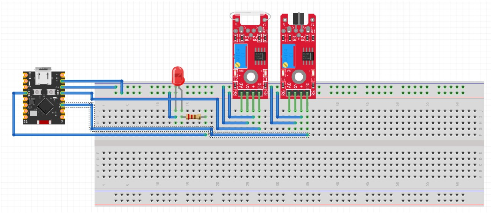
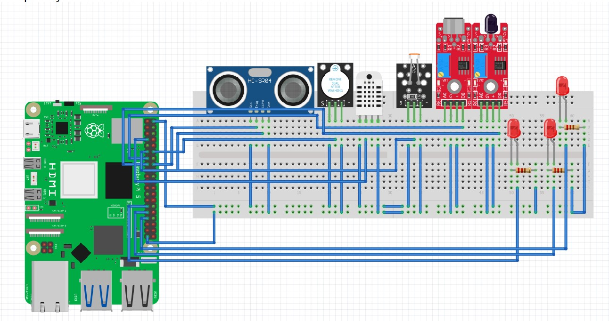
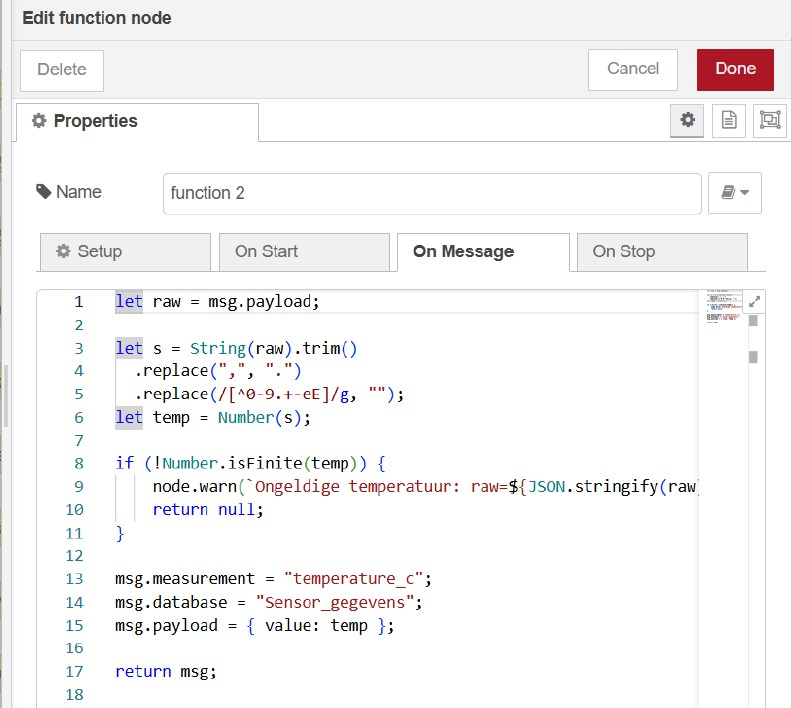
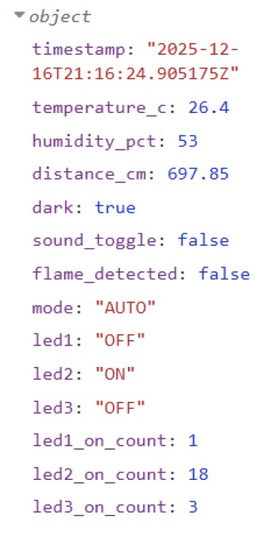
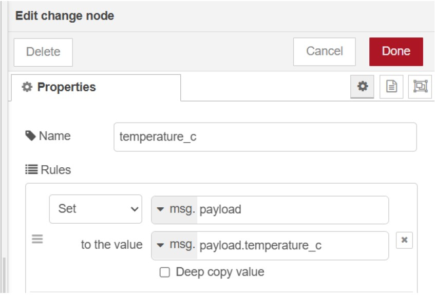
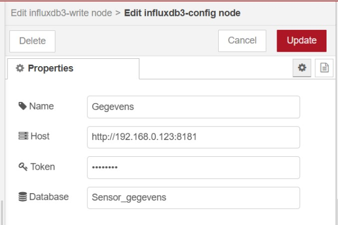
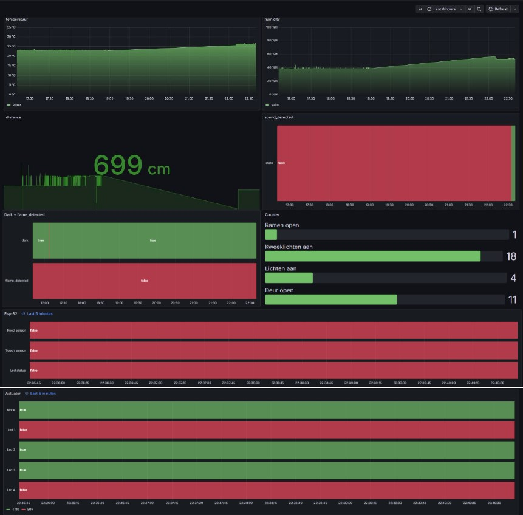

Slimme Serre
Ik ga een slimme serre maken. Deze serre maakt gebruik van
verschillende sensoren om zo optimaal mogelijk planten te laten
groeien. Het zal ook sensoren gebruiken voor security.
Dit is een systeem die docker compose gebruikt om verschillende
meetingen te maken en deze te visualiseren op Grafana. Deze doen we
door gebruik te maken met Eclipse Mosquitto, Influxdb3, Nodered en
een python script.
Ik gebruik hier Raspberry Pi 5 en ESP32-C3 Super Mini.
Benodigdheden
| Sensor/component | Reden | Extra’s |
|---|---|---|
| Temperature and Humidity Sensor | Om de temperatuur en vochtigheid te meten van de serre, wanneer het te warm is zal er automatisch een raam geopend worden. | De raam wordt voorgesteld door een ledje. |
| Photoresistor | Om de hoeveelheid licht te meten. Bij weinig licht zal de speciale kweeklampen branden. | De kweeklampen worden voorgesteld door een ledje. |
| Reed Switch en Touch Sensor | Om ervoor te zorgen dat de lichten kunnen bediend worden door te klappen. | De lichten worden voorgesteld door een ledje. |
| Flame Sensor | Om brand te detecteren. | / |
| Ultras sensor | Om te zien dat er geen vogels binnen vliegen. | / |
| Buzzer | Wanneer er een vogel binnen vliegt zal er een geluidje afspelen om de vogels weg te jagen. | / |
| Esp 32 | Microcontroller | / |
Verbinding
De read switch en touch sensor zullen verbonden zijn met de esp 32. De rest van de sensoren zullen direct verbonden zijn met de Raspberry Pi.


Traefik
Met Traefik kan ik gebruik maken van een reverse proxy. Ik heb met deze ervoor gezorgd dat de Node-Red en Grafana pagina op een andere Ip adress te vinden zijn, namelijk http://"IP"/nodered en http://"IP"/grafana. Maar hierop gaan we niet surfen. Ik gebruik pangolin uw deze twee URL's publiek te maken voor iedereen. De pangolin domein is gegeven door de lector. Is dus niet gratis.
InfluxDB3
De Raspberry Pi 5 kan geen Influxdb3 runnen, omdat deze te ingewikkeld is voor de Raspberry. Mijn oplossing hiervoor is om mijn database te laten runnen op mijn eigen laptop. Dit doe je door de volgende te doen:
- Download Influxdb3 Core, Link voor instalatie
- Unzip de gedownloade zip file.
- Ga vanuit uw command prompt naar de gezipte file.
- Voer de volgende code uit, influxdb3 serve --node-id host01 --object-store file --data-dir ~/.influxdb3
- Maak een token met, influxdb3 create token –admin
- Maak database, influxdb3 create database "database_naam"
- Controle dat database gemaakt is, influxdb3 show databases --host "IP_laptop" --token "Token_key"
Node-Red
Doordat ik influxdb3 gebruik ziet Node-Red iets anders uit dan normaal. Eerst download node-red-contrib-influxdb3 pallete voor de Influxdb3 write node te gebruiken
- Hier is een voorbeeld van een inkomende MQTT bericht.
- Ik gebruik een change node om elke waarde apart te nemen.
- Hierachter moet een functie node komen om de vorige waarde te omzetten naar iets die de Influxdb3 write node kan gebruiken.
- Steek de juiste waarde in de write node.




Node-Red Dashboard
Dit is een manier om vanuit Node-Red uw ledjes te bedienen.
- Download de node-red-dashboard pallete voor de juiste nodes.
- Gebruik een switch node en vul de gegevens in.
- Zet hierachter een mqtt out node en vul de gegevens in.
- Door te surfen naar https://"IP"/nodered/ui, kan je uw lichten bedienen.
Grafana
Door Influxdb3 is hier ook verschillende dingens die je moet doen.
- Ga bij de linkse zijbar naar connections en add new connections.
- Kies voor InfluxDB.
- Pak als url voor de connectie met de database.
- Bij database zet u de gekozen naam voor uw database.
- Bij Token pak je de gemaakte token van uw database.
Nu kan je starten bij het visualiseren van uw waarden.
- Add visualisatie
- Kies voor Time series
- Bij query kies je de data source die je hierboven hebt gemaakt. (connections)
- In de query code moet je SQL code schrijven. Hier een voorbeeld, SELECT * FROM temperature_c ORDER BY time DESC;
|
Time series Geeft waarde in verband met tijd |
Status history Geeft booleaanse visualisatie |
|---|---|
| Temperatuur meetingen | Deur open |
| Vochtigheids meetingen | Kweeklichten branden |
| Touch sensor | Raam open |
| Reed switch | Lichten gaan aan |
| Buzzer gaat aan |
|
Stat Visualisatie van een specifieke waarde |
Bar chart Visualisatie van categorie data |
|---|---|
| Ultra sonar sensor | Aantal keren opening van deur |
| Photoresistor sensor | Aantal keren opening van raam |
| Flame sensor | Aantal keren branding van kweeklichten |
Uitkomsten

Troubleshoot
Ik heb geen manier gevonden om vanuit de dockerfile mijn GPIO's aan
te sturen. Ik heb hiervoor mijn script laten runnen op een andere
terminal binnenin de Raspberry. Hiervoor moet je eerst wel een
virtueel environment maken.
Dit doe je door:
- python3 -m venv venv, om een virtual env te maken.
- source venv/bin/activate, om de virtual env te opstarten.
Proces
Dag 1 begon al niet goed bij mij. We kregen eerst uitleg hoe je uw
GPIO’s kunt aansturen binnen in docker. Deze werkte niet bij mij.
Blijkt dus dat de standaard GPIO libraries, RPI GPIO, niet werkt met
Raspberry Pi 5. Ik moest dus andere manieren vinden om de GPIO’s in
praat te krijgen. Ik heb de eerste dag de volle 6 tot 7 uur bezig
gezeten en zitten opzoeken of er een andere manier was hiervoor. Ik
kon persoonlijk nergens iets vinden. Er waren verschillende
libraries, namelijk: pigpio, gpiozero en libgpiod. Er zijn meerdere,
maar deze waren de meest gebruikte en de beste die werkte voor mij.
Deze werkten enkel buiten mijn docker, vanaf dat ik de GPIO’s wou
aansturen binnen in mijn docker, dan liep het volledig fout.
Na een heledag opzoeken waarom dit niet werkt. Heb ik gevraagd aan
de meneer of ik buiten mijn docker de python script kon runnen en
dit mocht.
Zoals ik al zei werkt Influxdb3 niet op een Raspberry Pi 5. Dus heb
ik deze gerunned op mijn eigen laptop. Er werd later gevraagd aan
mij of deze in een docker zat, maar helaas heb ik dit niet gedaan,
omdat ik er niet bij stilstond dat dit een optie was.
Bij Node-Red had ik het moeilijk met het schrijven van de functie
nodes, aangezien deze correct moeten zijn voor de influxdb write
node.
Op Grafana moest ik SQL code gebruiken om mijn queries te schrijven,
gelukkig heb ik twee jaar geleden al iets gezien over databases, dus
dit was niet volledig nieuw voor mij. Wat mij wel problemen gaf was
het maken van een bar chart. Ik kreeg deze maar niet te praat. Ik
heb dan overgeschakeld naar een bar gauge.
Verder was ik eerst van plan een Cloudfare te gebruiken voor mijn
publieke access, maar wanneer ik zo goed als klaar was werkte deze
niet. Ik moest blijkbaar mijn eigen domein aankopen, iets dat ik
niet wou doen. Dus heb ik overgeschakeld naar Pangolin. Deze was
veel simpeler en de meeste dingens waren voor mij al in orde
gebracht. Het moeilijke hieraan is weten welke labels ik moest
gebruiken om iets te doen werken, welke labels bij andere labels
werkt en welke totaal niet werkte. Uiteindelijk heb ik de public
access kunnen regelen.